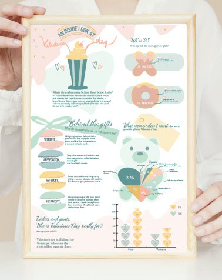

Meghan Markle Stipple PortraitThis is a portrait that I created entirely out of dots!Fact sheetsThese are fact sheets for Joaquin Phoenix and Leonard Cohen.Punjab JewellersSocial media posts for Punjab Jewellers, theme gold, black & white.

InfographicA Valentines Day infographic about an inside look at the holiday.